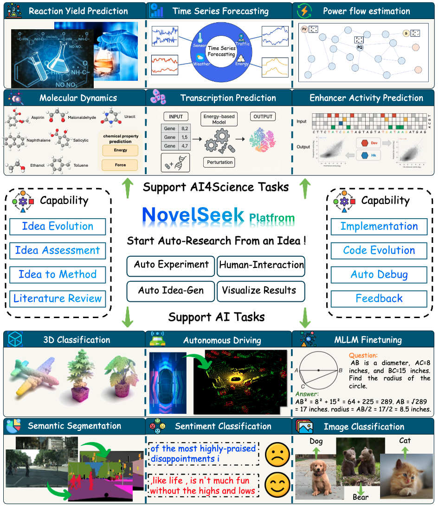
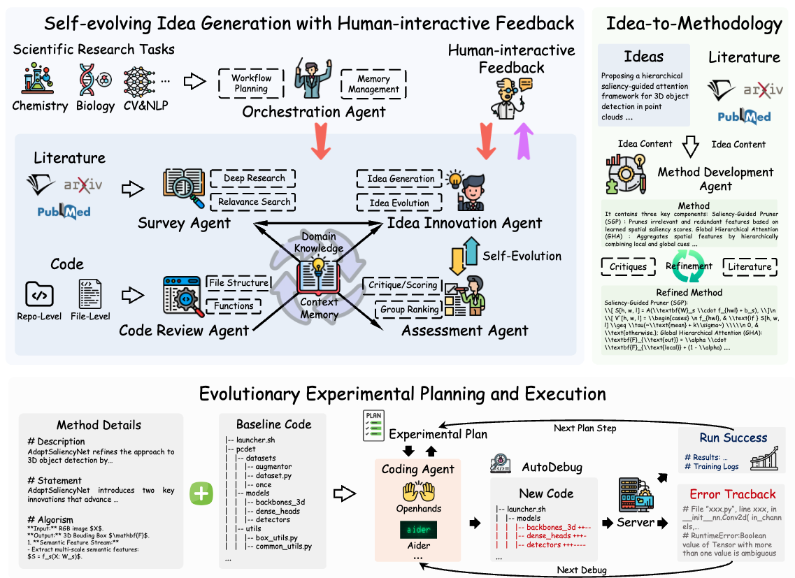
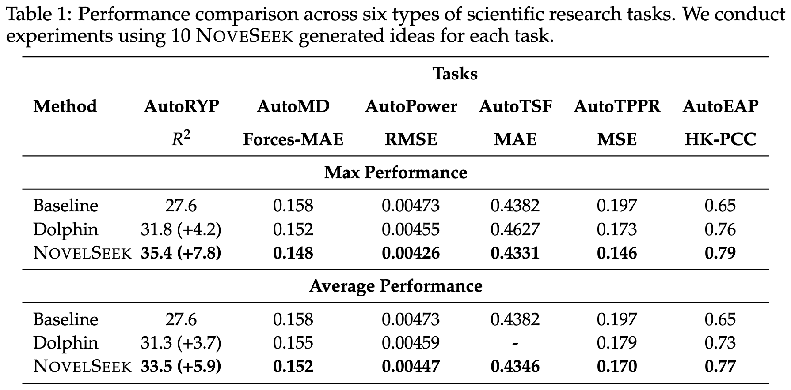
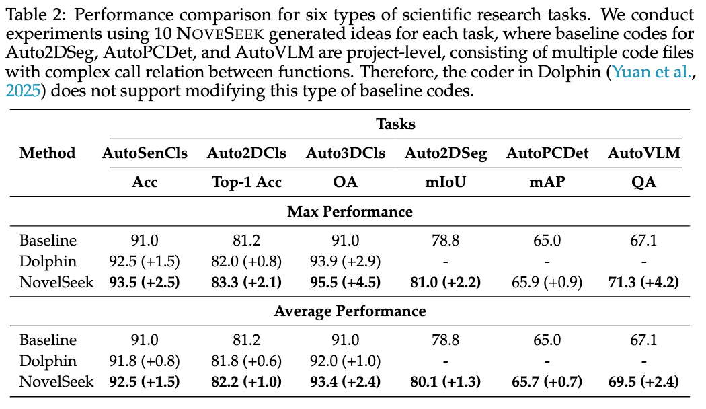
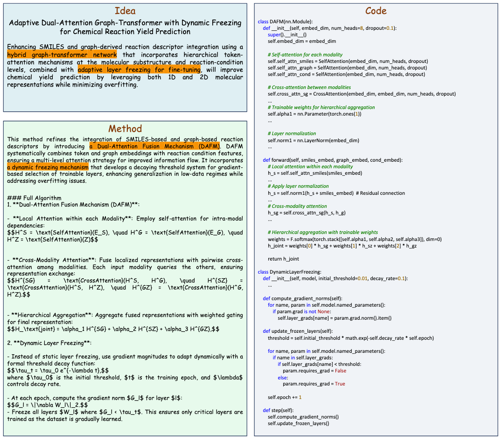
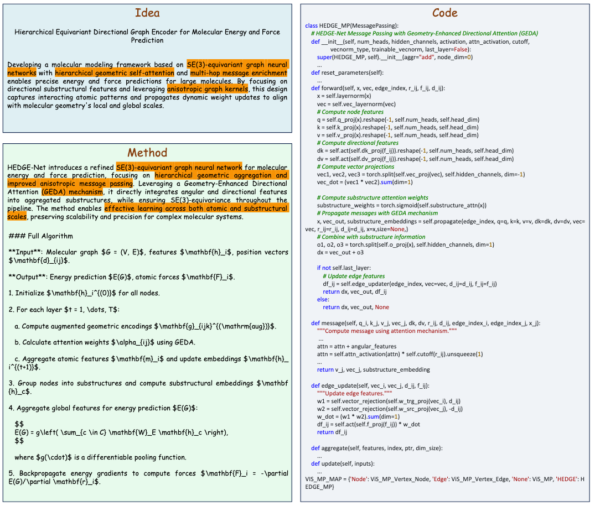

Artificial Intelligence (AI) is accelerating the transformation of scientific research paradigms, not only enhancing research efficiency but also driving innovation. We introduce NovelSeek, a unified closed-loop multi-agent framework to conduct Autonomous Scientific Research (ASR) across various scientific research fields, enabling researchers to tackle complicated problems in these fields with unprecedented speed and precision. NovelSeek highlights three key advantages: 1) Scalability: NovelSeek has demonstrated its versatility across ten scientific research tasks, capable of generating innovative ideas to enhance the performance of baseline code. 2) Interactivity: NovelSeek provides an interface for human expert feedback and multi-agent interaction in automated end-to-end processes, allowing for the seamless integration of domain expert knowledge. 3) Efficiency: NovelSeek has achieved promising performance gains in several scientific fields with significantly less time cost compared to human efforts. For instance, in reaction yield prediction, it increased from 24.2% to 34.8% in just 12 hours; in 3D point cloud classification, accuracy rose from 91.0% to 95.5% with only 4 hours of processing; and in 2D semantic segmentation, precision advanced from 78.8% to 81.0% in a mere 30 hours.

NovelSeek is designed to facilitate innovative research across diverse scientific domains. It incorporates three primary capabilities: self-evolving idea generation with human-interactive feedback, comprehensive idea-to-methodology translation, and multi-round automated experiment execution. Each capability is realized through the collaboration of specialized agents, allowing for seamless integration of different processes to enhance scientific discoveries




